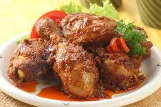

<< Resep Makanan
Bahan |
Bumbu |
Cara Membuat
Ayam Bumbu Bali

Ayam bumbu Bali merupakan salah satu kuliner khas yang dapat kita temukan
di Bali dan memiliki cita rasa luar biasa sedap.
Bahan-bahan:
- 1 ekor ayam, potong-potong
- 1 sendok teh gula pasir
- 1/4 sendok teh merica bubuk
- 2 sendok teh garam
- 3 lembar daun salam
- 3 sendok makan minyak untuk menumis
- 700 ml air
Bumbu halus:
- 1 buah tomat
- 1 sendok teh terasi, dibakar
- 10 butir bawang merah
- 4 siung bawang putih
- 6 buah cabai merah besar
- 8 buah cabai merah keriting
Cara Membuat:
- Panaskan minyak.
- Masukkan bumbu halus dan daun salam, tumis hingga harum.
- Masukkan ayam lalu aduk hingga berubah warna.
- Tambahkan garam, gula, dan merica. Aduk rata.
- Tambahkan air.
- Masak hingga matang dan bumbunya meresap.
- Ayam bumbu Bali siap disajikan.
KEMBALI